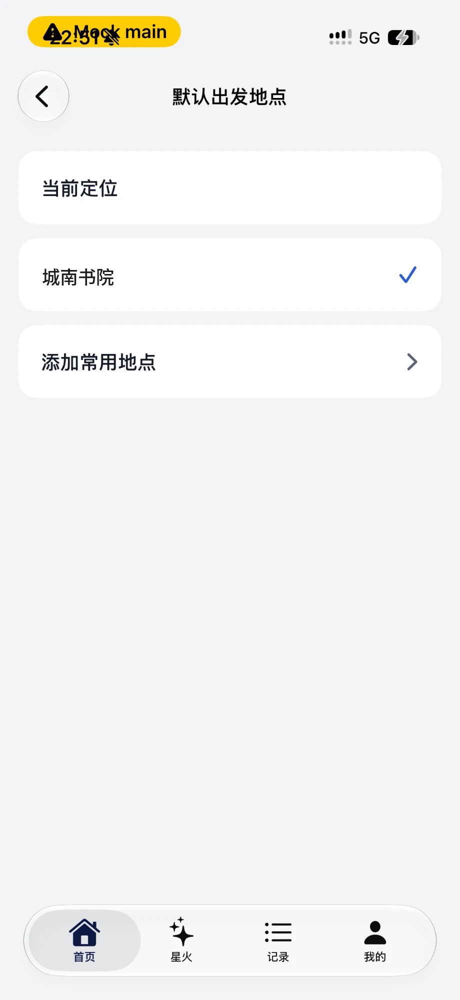

（入库副本：去掉了苹果地图参考截图那一列，示例地名换成通用名；原稿在负责人本机设计存档。）
版式照苹果地图搜索面板：灰色分组标题 + 白卡；中间一张「资料库」式卡片，一排圆形彩色图标、下面两行字，卡底一行「全部 › 」；下面一张「最近」式列表卡。
尺寸来自对参考图的实测（屏宽 393pt，1.71 px/pt）：圆 60pt、圆心间距约 85pt、卡片左右边距 16pt、圆下名称 15pt、副标题 13pt、列表行高 72pt、列表图标 30pt。
绿色标注是为盲人和低视力用户加的、苹果原图没有的东西。

没有图标、没有分组，看不出哪行是「当前定位」、哪行是收藏、哪行是按钮；勾是唯一的「已选」线索。
点圆 = 设为默认，朗读「默认出发地点已改为 X」并回首页（和现在一样）。点「添加」进已有的「添加常用地点」页。点最近的一行 = 收藏并设为默认（与添加页同一个动作）。没跑过的人不出现「最近」这一组。
少一张卡，页面更像苹果原图；代价是读屏用户要逐个听到「已选定」那一个才知道现在用的是哪里（最多可能听 11 个）。
只有两个圆，靠左排（苹果也是靠左）。没有收藏时不出「全部」行；没跑过时不出「最近」组。
最多 10 个收藏（`FavoritePlaceStore.capacity`），加上「当前定位」和「添加」最多 3 排。图标按地名自动配：公园 / 绿道 → 树，地铁 / 站 → 列车，操场 / 体育 → 跑道，学校 / 书院 → 学士帽，其余 → 红色图钉。名字最多两行，超出用「…」，读屏念全名。
字号到「辅助功能大字」档时，一排四个圆放不下，改成一行一个（圆缩成 52pt，名字整行显示不截断）。按 `dynamicTypeSize.isAccessibilitySize` 切换，不用 `ViewThatFits`（之前在两页上让字号审计误判过）。
点一行 = 设为默认出发地点。向左滑可以删除；读屏用户上下轻扫选「删除」操作。删掉的是默认地点时，自动改回当前定位并朗读。
照苹果「9 Places ›」点进去的列表：行和「最近」同一套（30pt 圆 + 粗标题 + 灰副标题，72pt 行高）。副标题是收藏时存的地址，没有地址的（从「最近跑过」收藏的）只显示名字。删除不弹二次确认（iOS 左滑删除的惯例；删错了重新收藏一次即可，代价小）。
只换图标形状（32pt 圆角方块 → 30pt 圆），版式、文案、行为都不动。分隔线照苹果从图标左缘画起（现在是从文字起点）。
图标只是装饰，读屏不念。每个圆连同下面两行字是一个按钮，可点区约 85 × 104pt（≥ 64pt）。
| 苹果 | 这里 | 为什么 |
|---|---|---|
| 没有「当前选中」 | 顶部「现在默认从这里出发」卡；选中的圆加蓝环 + 蓝字「默认」 | 读屏用户进页第一句就知道现在用的是哪里，不用逐个听到打勾那一个；低视力靠环和字两条线索，不只靠颜色 |
| 圆超过 4 个横着滑 | 换行 | 横滑会把收藏藏到屏幕外，低视力用户发现不了 |
| 卡片圆角约 12pt | 22pt | 和本 App 所有白卡（`GroupedCardMetrics.cardRadius`）一致 |
| 浅青 / 浅绿 / 棕 | 深一档的本 App 色 | 白色图标压在圆上要看得清；颜色取 App 已有的深色调，白图标对比度都 ≥ 4.5:1 |
| 副标题是开车时间 | 离你几公里；「当前定位」写「跟着你走」 | 我们没有开车时间；拿不到定位时不写距离 |
| 底行 44pt | 56pt 可见、64pt 可点 | 盲人端可点区下限 64pt |